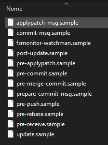

Esquecer de atualizar testes é sempre um problema, perceber que eles quebraram só quando as git actions reclamam durante um PR é ainda pior 😅
A melhor forma de evitar que isso aconteça é agir preemptivamente e executarmos os testes sempre que formos fazer um commit, mas confiar na memória e no Visual Studio (been there, done that) não é 100% seguro, portanto precisamos automatizar.
Entram em cena os git hooks
O git possui uma feature chamada hooks que permite a execução de tarefas automatizadas baseadas em scripts em determinados momentos durante o fluxo de trabalho no git, esses scripts se encontram em .git\hooks\ dentro da pasta de cada repositório (exemplo: C:\repos\core\.git\hooks
Esta pasta inicialmente irá conter um conjunto de hooks de exemplo, todos nomeados com .sample ao fim do nome do arquivo. Para utilizar um hook, remova o .sample do nome do arquivo, ele deverá ficar sem extensão, e altere seu conteúdo.
Para criarmos um hook que seja executado antes de cada commit (local), vamos remover o .sample do arquivo pre-commit.sample e em seguida editar seu conteúdo.
Para executarmos testes, vamos utilizar o comando: dotnet test "caminho do projeto"
Cada hook é composto por um script escrito em qualquer linguagem, framework ou ferramenta que seja executável no computador disparando o trigger em questão. O ponto importante a se lembrar é que um hook espera uma saída 0 (zero) para sucesso e qualquer outro valor para falha.
Então, de forma bem simples, temos o seguinte script:
|
|
No script acima o comando exec dotnet test (...) executa os testes do projeto Cobalto.Core.Tests.csproj e retorna 0 em caso de sucesso e 1 em caso de erro, exatamente como o git hook espera e portanto nenhuma outra validação é necessária.
Arquivo salvo, ao tentar executar um commit o esperado é que o mesmo ocorra normalmente com a única diferença sendo o tempo levado para o comando executar, afinal agora todos os testes irão rodar em background antes do commit ser de fato executado.
Caso algum teste falhe o retorno será negativo e com isso o commit nunca é executado. Mas não se preocupe, você receberá uma mensagem ao fim da operação no terminal.
Mas e no Visual Studio? (porque eu não sei usar o terminal 🤡)
O git hook é uma feature do git, portanto ele vai ser executado antes do commit da mesma forma quando chamado pelo Visual Studio.
Até o momento que escrevo esse tutorial realmente falta uma mensagem minimamente informativa no Visual Studio (ele irá exibir apenas um erro caso algum teste falhe), vou verificar se isso pode ser resolvido e atualizo essa página com os resultados. É que eu uso o terminal 😅
Pronto, seus commits agora requerem sucesso em todos os testes para serem processados.
Lembrando: Tudo descrito aqui é referente ao repositório local assim como a execução dos testes, isso não substitui nem burla as validações de qualidade configuradas no seu repositório remoto 🐙🐱
Não esqueça de alterar o caminho do projeto de testes.
Lembre que o script aceita qualquer comando válido, então você pode estender para vários projetos de testes e virtualmente qualquer outro processo antes da execução do commit.
One more thing!
Você lembra como se desfaz commits locais? Pois é, nem eu. (spoiler: git reset HEAD^)
Eu sempre acabo tendo que procurar na internet esse comando chato quando por acidente 👀 acabo commitando aquele appsettings.json ou qualquer outra alteração feita exclusivamente para testes locais.
Pra isso eu criei um alias chamado uncommit que funciona da seguinte forma:
|
|
Para definir o alias uncommit você pode seguir de duas formas:
- Executando diretamente no terminal
|
|
- Editando o arquivo .gitconfig do seu usuário e adicionado um alias
|
|
Agora você pode uncommitar seus commits com um comando simples e fácil de lembrar.
Disclaimer: Esse texto foi escrito originalmente para a documentação interna que mantemos na empresa em que trabalho, mas como não existe nada sigiloso nele estou compartilhando aqui também 😊